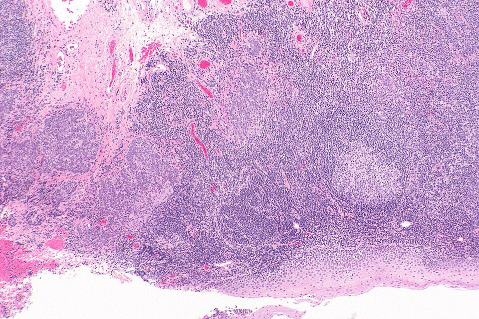

General information only. It does not replace advice from your care team and should not be used to choose a treatment.


At a glance
| How common | Rising in Europe and North America; in some countries it now exceeds HPV-caused cervical cancer |
| Causes | HPV 16 (70% in the USA and northern Europe; less in the south), tobacco and alcohol |
| Typical sign | A painless neck lump; persistent sore throat or earache |
| Treatment | Transoral surgery or chemoradiotherapy |
| Outlook | Over 80% at five years if HPV-positive |
Two different diseases
| HPV-positive (p16+) | HPV-negative | |
|---|---|---|
| Who | Aged 40-60, often non-smokers | Older smokers and drinkers |
| Presentation | Small primary tumour, large cystic node | Bulkier tumour |
| Outlook | Much better | Worse |
HPV is spread through oral sex; the number of sexual partners is the risk factor. That is why HPV vaccination for boys is as important as for girls.
Diagnosis
Examination, nasendoscopy, biopsy or node needle sampling, p16/HPV, CT or MRI and PET-CT. Sometimes the primary is so small it is found by diagnostic tonsillectomy or transoral surgery.
Treatment
- Early: transoral robotic surgery (TORS) or laser, or radiotherapy alone.
- Advanced: cisplatin chemoradiotherapy. Cetuximab gave worse results than cisplatin in HPV-positive tumours (De-ESCALaTE and RTOG 1016 trials).
- Reducing treatment intensity for good-prognosis HPV-positive tumours is being studied, to lessen long-term effects (dry mouth, swallowing problems).
- Follow-up: HPV DNA in blood helps detect relapse.
See also: Head and neck cancer, Cervical cancer, Vaccines and cancer.
History · Medicapedia
Oropharyngeal cancer in the history of medicine
How it was discovered, who studied it and how its treatment changed over the centuries, told on Medicapedia, our sister site on the history of medicine.
Read the history on Medicapedia ↗Sources
- Ang KK, et al. Human papillomavirus and survival of patients with oropharyngeal cancer. N Engl J Med. 2010;363:24-35. doi:10.1056/NEJMoa0912217
- Mehanna H, et al. Radiotherapy plus cisplatin or cetuximab in low-risk HPV-positive oropharyngeal cancer (De-ESCALaTE HPV). Lancet. 2019;393:51-60. doi:10.1016/S0140-6736(18)32752-1
- Gillison ML, et al. Radiotherapy plus cetuximab or cisplatin in HPV-positive oropharyngeal cancer (NRG Oncology RTOG 1016). Lancet. 2019;393:40-50. doi:10.1016/S0140-6736(18)32779-X